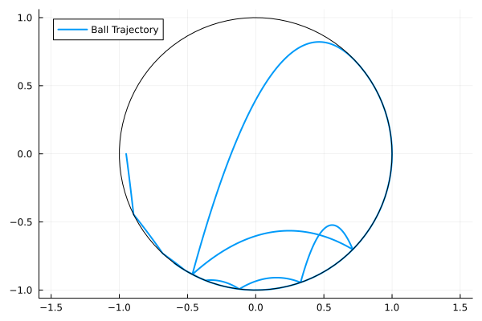

A Mechancal Example
A Mechanical system contains the data $(M, V, G, N, R, E)$
- .$M(q)$ is the mass matrix.
- .$V(q)$ is the potential energy.
- .$G(q)$ is the event location function.
- .$N(q)$ is the normal to the guard.
- .$R(q)$ is the reset/impact map.
- .$E$ is the coefficient of restitution.
The mechanical system has the Hamiltonian
\[ H(q,p) = \frac{1}{2}p^\top M^{-1}(q) p + V(q).\]
If the reset map is not specified, specular reflection is used.
\[ H(x,y,p_x,p_y) = \frac{1}{2}(p_x^2+p_y^2) + y\]
\[ h(x,y) = 1 - (x^2+y^2) \geq 0.\]
import HybridDynamics as HD
import Plots as plt
using LaTeXStrings
M(q) = [1.0 0.0; 0.0 1.0]
V(q) = q[2]
h(q) = 1 - (q[1]^2+q[2]^2)
∇h(q) = [-2*q[1], -2*q[2]]
r = 0.6;0.6sysM = HD.MechanicalSystem(M, V; guard=h, normal=∇h, e=r)
probM = HD.prob(sysM, [-0.95, 0.0, 0.2, -1.5], (0.0, 10.0))
solM = HD.solve(probM, HD.RK4())HybridDynamics.MechanicalSol{Vector{Float64}, Vector{Vector{Float64}}, Vector{Vector{Float64}}, prob{MechanicalSystem{typeof(Main.M), typeof(Main.V), typeof(Main.h), typeof(Main.∇h), HybridDynamics.var"#MechanicalSystem##2#MechanicalSystem##3", Float64}, Vector{Float64}, Tuple{Float64, Float64}}, Vector{Float64}, Vector{Int64}, Vector{Float64}}([0.0, 0.01, 0.02, 0.03, 0.04, 0.05, 0.060000000000000005, 0.07, 0.08, 0.09 … 9.911677005953187, 9.921677005953187, 9.931677005953187, 9.941677005953187, 9.951677005953186, 9.961677005953186, 9.971677005953186, 9.981677005953186, 9.991677005953186, 10.0], [[-0.95, 0.0, 0.2, -1.5], [-0.948, -0.01505, 0.2, -1.51], [-0.946, -0.030199999999999998, 0.2, -1.52], [-0.944, -0.04545, 0.2, -1.53], [-0.942, -0.0608, 0.2, -1.54], [-0.94, -0.07625, 0.2, -1.55], [-0.938, -0.09179999999999999, 0.2, -1.56], [-0.9359999999999999, -0.10744999999999999, 0.2, -1.57], [-0.9339999999999999, -0.12319999999999999, 0.2, -1.58], [-0.9319999999999999, -0.13904999999999998, 0.2, -1.59] … [-0.5931967766720516, -0.804812976736406, 0.06356353461807478, -0.04637078277866938], [-0.5925370722438861, -0.8052940108253633, 0.06837789705800325, -0.049833430104274185], [-0.5918292074693661, -0.8058095913538486, 0.07319563763358379, -0.05327988217689237], [-0.5910731475674053, -0.8063595507176311, 0.0780169550083894, -0.056709009019243015], [-0.5902688558095923, -0.806943710023882, 0.0828420399001562, -0.06011968291795617], [-0.5894162936021526, -0.8075618791146926, 0.08767107458085371, -0.06351077860035895], [-0.588515420572887, -0.8082138565923859, 0.09250423238129725, -0.06688117341618602], [-0.5875661946630396, -0.8088994298466711, 0.09734167720060191, -0.0702297475244744], [-0.586568572224047, -0.8096183750836929, 0.10218356302078002, -0.0735553840858946], [-0.5857013163325019, -0.8102420304766552, 0.10621695170778184, -0.0763050174924868]], [[0.2, -1.5, 0.0, -1.0], [0.2, -1.51, 0.0, -1.0], [0.2, -1.52, 0.0, -1.0], [0.2, -1.53, 0.0, -1.0], [0.2, -1.54, 0.0, -1.0], [0.2, -1.55, 0.0, -1.0], [0.2, -1.56, 0.0, -1.0], [0.2, -1.57, 0.0, -1.0], [0.2, -1.58, 0.0, -1.0], [0.2, -1.59, 0.0, -1.0] … [0.06356353461807478, -0.04637078277866938, 0.4812741479899344, -0.347036776155318], [0.06837789705800325, -0.049833430104274185, 0.481601776098594, -0.3454738208592195], [0.07319563763358379, -0.05327988217689237, 0.48194965108440574, -0.3437977604145923], [0.0780169550083894, -0.056709009019243015, 0.4823170035041454, -0.3420088125307287], [0.0828420399001562, -0.06011968291795617, 0.4827030137044174, -0.34010721235815966], [0.08767107458085371, -0.06351077860035895, 0.48310681226099567, -0.338093212967851], [0.09250423238129725, -0.06688117341618602, 0.4835274804479608, -0.3359670858567647], [0.09734167720060191, -0.0702297475244744, 0.4839640507369052, -0.3337291214790278], [0.10218356302078002, -0.0735553840858946, 0.4844155073264931, -0.33137962980189173], [0.10621695170778184, -0.0763050174924868, 0.4848018411603267, -0.32933934548720034]], prob{MechanicalSystem{typeof(Main.M), typeof(Main.V), typeof(Main.h), typeof(Main.∇h), HybridDynamics.var"#MechanicalSystem##2#MechanicalSystem##3", Float64}, Vector{Float64}, Tuple{Float64, Float64}}(MechanicalSystem{typeof(Main.M), typeof(Main.V), typeof(Main.h), typeof(Main.∇h), HybridDynamics.var"#MechanicalSystem##2#MechanicalSystem##3", Float64}(Main.M, Main.V, Main.h, Main.∇h, HybridDynamics.var"#MechanicalSystem##2#MechanicalSystem##3"(), 0.6, -1), [-0.95, 0.0, 0.2, -1.5], (0.0, 10.0)), [0.2719037551667715, 0.47137734237928636, 0.646009961980934, 0.646009961980934, 0.6644048877152726, 0.6644048877152726, 0.6644048877152726, 0.6644048877152726, 0.6644048877152726, 4.857644442454123, 6.183728346619686, 7.700875572197869, 8.376624564701087, 8.812260632272416, 8.812260632272416, 9.401677005953198, 9.401677005953198, 9.401677005953198], Int64[], [0.6644048877152726, 0.6744048877152726, 0.6844048877152726, 0.6944048877152726, 0.7044048877152727, 0.7144048877152727, 0.7244048877152727, 0.7344048877152727, 0.7444048877152727, 0.7544048877152727 … 9.901677005953188, 9.911677005953187, 9.921677005953187, 9.931677005953187, 9.941677005953187, 9.951677005953186, 9.961677005953186, 9.971677005953186, 9.981677005953186, 9.991677005953186])xm = getindex.(solM.x, 1)
ym = getindex.(solM.x, 2)
plt.plot(xm, ym, label="Ball Trajectory", lw=2)
θ = LinRange(0, 2π, 100)
plt.plot!(cos.(θ), sin.(θ), label="", lc=:black, aspect_ratio=1)
The first time the state becomes Zeno can be found.
solM.zeno[1]0.6644048877152726